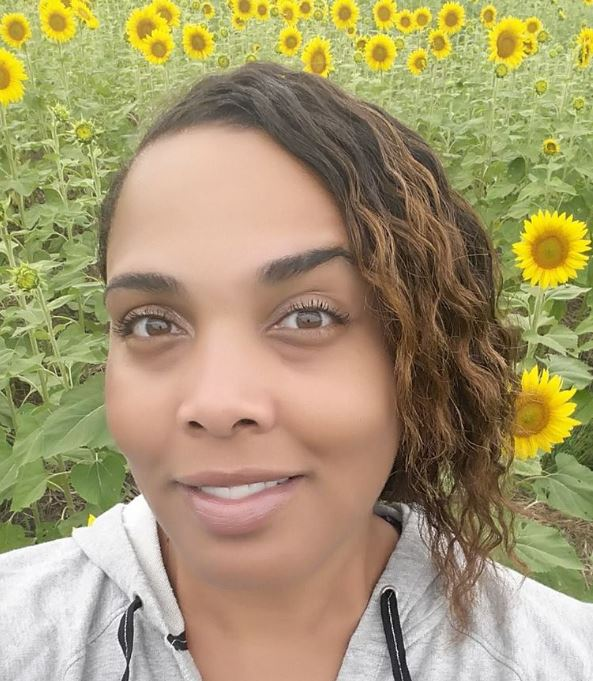

About Me
Kathryn is a remote digital media specialist for the Digital Operations and Digital Live Data teams for OUTFRONT Media. Both teams are responsible for digital outdoor content in various North American and Canadian markets. She is very fortunate to work with a great team and strong leadership. Kathryn has great initiatives for digital growth and looks forward to fantastic achievements in 2017.
Kathryn enjoys her job and appreciates the path that has led her thus far. After earning a BFA in Digital Media Production in 2005, Kathryn began freelancing for various entertainment projects as a production assistant. After a short stint as a contractor for Turner Studios in 2007 as the Scenic Services Assistant, she became the Senior Coordinator for the Turner Creative Production Group. CPG is a full service, in-house, print and digital production team that services Turner Corporate and all entities including tbs, TCM, TNT, truTV, Cartoon Network, Adult Swim, Turner Sports, CNN and HLN. In this role, she has proven her aptitude as a leader in a fast paced workflow.
She was promoted to Digital Signage Operations Manager in 2009 for Turner's digital signage inventory in Atlanta and New York. Attention to detail and organization is vital for publishing content that is seen by millions of people daily. She was responsible for signage maintenance and content management for all 10 of Turner's networks. While Providing specialized support to each network, she also consulted digital content strategies while curating client relationships and expectations.
Connect with Me